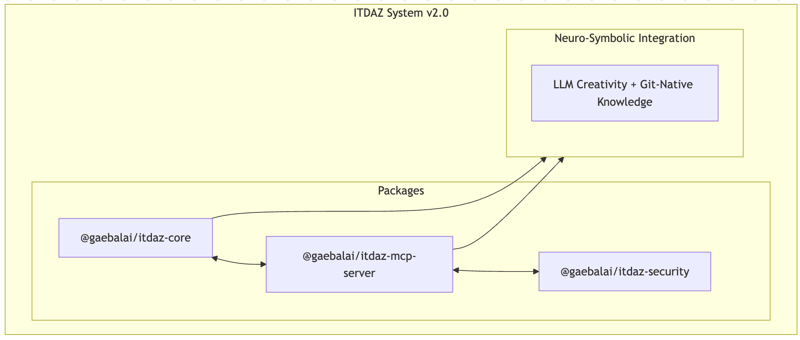

ITDAZ - 뉴로심볼릭 AI 통합 시스템 오픈소스 (2026년 1월 공개예정)
Git-Native 지식 통합을 통한 차세대 AI 코딩 시스템
ITDAZ는 뉴럴(LLM)과 심볼릭(지식 그래프) 추론을 통합한 차세대 AI 코딩 시스템입니다. ITDA-SDD 방법론과 Git-Native 지식 관리를 결합하여, 고품질 소프트웨어 개발을 체계적으로 지원합니다.
특징
- 뉴로심볼릭 통합: LLM의 창의성과 지식 그래프의 엄격함을 결합한 추론 구조
- 심볼릭 추론: 형식 검증(Formal Verification), 환각(Hallucination) 탐지, 개발 헌법(Constitution) 강제
- EARS 형식 요구사항 분석: 자연어 요구사항을 정형 요구사항으로 변환 및 검증
- 설계 패턴 추천: 컨텍스트 기반 C4 모델 및 ADR(Architecture Decision Record) 자동 생성
- 테스트 주도 개발(TDD): Test-First 원칙을 통한 품질 보증
- 완전한 추적 가능성(Traceability): 요구사항부터 코드까지 전 과정 추적 가능
- 1문 1답 형식 요구사항 인터뷰: 대화 기반의 단계적 요구사항 정의 지원
- 다국어 지원(i18n): 한국어 및 영어 대응
- 보안 스캔: 취약점 탐지, 시크릿(Secret) 스캔, OWASP 패턴 분석
- 자기 학습 시스템: 피드백 수집과 패턴 추출을 통한 적응형 지속 개선
- C4 코드 생성: C4 설계 문서로부터 TypeScript 스켈레톤 코드 자동 생성
- 품질 게이트(Quality Gate): 단계(Phase) 전환 이전의 자동 품질 검증
- 고급 추론 기능: OWL 2 RL 추론 및 Datalog 평가
- 대화형 REPL: 명령어 자동 완성, 히스토리 관리, 세션 변수 지원
- Git-Native 지식 관리: 파일 기반 지식 그래프 관리
- 형식 검증(Formal Verification): Z3 SMT Solver 통합, Hoare Triple 검증, EARS → SMT 변환
- 보안 분석: 취약점 스캔, 시크릿 탐지, 테인트 분석(Taint Analysis), 의존성 감사
아키텍처
- 
GitHub Repository
Quick Start
npm/npx(권장)
# 글로벌 설치
npm install -g itdaz
# npx로 바로 실행
npx itdaz init
npx itdaz --help
# MCP 서버 실행
npx @gaebalai/itdaz-mcp-server
npx itdaz-mcp --transport stdio
주요 기능
요구사항 정의(Article II 준수)
- EARS 검증: Easy Approach to Requirements Syntax 패턴 검증
- 1문 1답 요구사항 인터뷰: 대화형 요구사항 수집
- 요구사항 분해: 큰 요구사항을 구현 단위로 분해
- 관련 요구사항 검색: 유사 및 의존 요구사항 자동 탐지
설계 생성(Article III 준수)
- C4 모델 생성: Context/Container/Component/Code 다이어그램
- ADR 생성: Architecture Decision Records
- 패턴 탐지: 디자인 패턴 자동 탐지·추천
- SOLID 검증: SOLID 원칙 준수 체크
코드 생성 및 검증
- 정적 분석: 품질 메트릭·복잡도 계산
- 보안 스캔: 취약점 탐지
- 테스트 생성: 유닛·통합 테스트 생성
- 커버리지 리포트: 테스트 커버리지 측정
MCP 서버
- 16개 도구(SDD 9개 + 패턴 7개)와 3개 프롬프트 제공:
- npx @gaebalai/itdaz-mcp-server